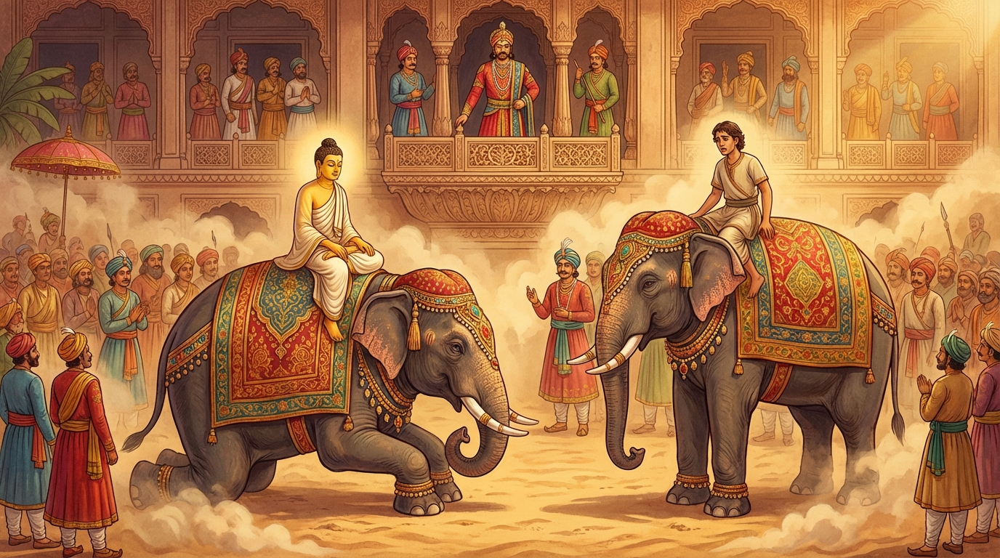

1. උපාහන ජාතකය (231)
“යථාපි කීතා” (මිල දී ගත් දේ යම් සේ ද) යනාදී වශයෙන් ඇරඹෙන මේ ධර්ම දේශනාව බුදුරජාණන් වහන්සේ වේළුවනාරාමයෙහි (පාලියෙහි දැක්වෙන පරිදි ජේතවනාරාමයෙහි) වැඩ වාසය කරන සමයෙහි දේවදත්ත තෙරුන් අරබයා වදාළ සේක. දම්සභාවෙහි භික්ෂූන් වහන්සේලා, “ඇවැත්නි! දේවදත්ත තෙම ගුරුවරයා ප්රතික්ෂේප කොට තථාගතයන් වහන්සේට විරුද්ධ වී, සතුරු වී මහත් විනාශයට පැමිණියේ ය”යි කථාවක් ඉපදවූහ. බුදුරජාණන් වහන්සේ එහි වැඩමවා, “මහණෙනි! මෙහි දැන් කවර නම් කථාවකින් යුක්ත ව සිටියාහු දැයි” විචාරා, “මේ නම් කථාවෙන්” යැයි කී කල්හි, “මහණෙනි! දේවදත්ත තෙම ගුරුවරයා ප්රතික්ෂේප කොට මට විරුද්ධ වී මහා විනාශයකට පත් වූයේ දැන් පමණක් නො වේ. පෙරත් විනාශයට පත් වූයේ ය”යි වදාරා අතීත කථාව ගෙනහැර දැක්වූ සේක.
යටගිය දවස බරණැස් නුවර බ්රහ්මදත්ත රජු රාජ්යය කරද්දී බෝසතාණන් වහන්සේ ඇතුන් පුහුණු කරන කුලයෙහි ඉපදී, වැඩිවියට පත් ව හස්ති ශිල්පයෙහි නිමාවට පැමිණි සේක. ඉක්බිති එක් කාසි රට ගම්වැසි මාණවකයෙක් අවුත් ඔහු සමීපයෙහි ශිල්ප ඉගෙන ගත්තේ ය. බෝසතාණන් වහන්සේලා නම් ශිල්ප උගන්වන්නාහු ගුරුමුෂ්ටි තබා නො ගනිති. තමන් දන්නා පරිදි ඉතිරි නො කොට ශිල්පයෙහි හික්මවති. ඒ නිසා ඒ මාණවකයා බෝසතාණන් වහන්සේගේ ශිල්පය ඉතිරි නැති ව ඉගෙන, බෝසතාණන් වහන්සේට, “ගුරුතුමනි! මම රජතුමාට උපස්ථාන කිරීමට (රාජකාරියට බැඳීමට) කැමැත්තෙමි”යි කීවේ ය. බෝසතාණන් වහන්සේ, “දරුව! යහපතැ”යි කියා ගොස් රජතුමාට, “මහරජතුමනි! මගේ අතවැසියා ඔබ වහන්සේට උපස්ථාන කිරීමට කැමැත්තේ ය”යි දැන්වූහ. “යහපති! උපස්ථාන කරවා”යි රජු කීවේ ය. “එසේ නම් මොහුට වැටුපක් නියම කරනු මැනවි”යි කීහ. “තොපගේ අතවැසියා නුඹට සමාන වැටුප් නො ලබයි. තොප සියයක් ලබන විට ඔහු පනහක් ලබයි. දෙකක් ලබන කල්හි එකක් ලබති”යි රජු කීවේ ය. බෝසතාණෝ ගෙට ගොස් ඒ පුවත අතවැසියාට සැළ කළහ. අතවැසියා, “ගුරුතුමනි! මම නුඹ වහන්සේ හා සමාන ව ශිල්ප දනිමි. ඉදින් සම වැටුප් ලබන්නේ නම් උපස්ථාන කරන්නෙමි. එසේ නො වේ නම් උපස්ථාන නො කරන්නෙමි”යි කීවේ ය. බෝසතාණන් වහන්සේ ඒ පුවත රජතුමාට දැනුම් දුන්හ. රජතුමා, “ඉදින් ඔහු තොප හා සමාන ශිල්ප දන්නේ නම්, තොප හා සමාන ව ශිල්ප දක්වන්නට හැකි නම් සමාන ව වැටුප් ලබන්නේ ය”යි කීවේ ය. බෝධිසත්ත්වයන් වහන්සේ ඒ පුවත ඔහුට දන්වා, ඔහු විසින් “යහපති, (ශිල්ප) දක්වන්නෙමු”යි කී කල්හි ඒ බව රජතුමාට දැනුම් දුන්හ. රජතුමා, “එසේ නම් හෙට ශිල්ප දක්වව්”යි කීවේ ය. “යහපති, දක්වන්නෙමු. නගරයෙහි බෙර ගස්සවනු මැනවි”යි කීවේ ය. රජතුමා, “හෙට ගුරුතුමා හා අතවැසියා යන දෙදෙනා හස්ති ශිල්ප දක්වති. හෙට රජ මිදුලට රැස් වී දකිනු කැමති අය බලත්වා”යි බෙර හැසිරෙව්වේ ය.
ගුරුතුමා, “මගේ අතවැසියා උපාය කෞශල්යය (උපක්රම දක්ෂතාවක් ගැන) නො දනිතී”යි සිතා, එක් ඇතෙකු ගෙන එක රැයකින් ම විලෝම (ප්රතිවිරුද්ධ) ලෙස පුහුණු කරවී ය. හෙතෙම ඇතාට:
- “යන්න”යි කී විට පසුබසින්නට ද,
- “පසුබසින්න”යි කී විට යන්නට ද,
- “සිටගන්න”යි කී විට වැතිරෙන්නට ද,
- “වැතිරෙන්න”යි කී විට සිටගන්නට ද,
- “ගන්න”යි කී විට තබන්නට ද,
- “තබන්න”යි කී විට ගන්නට ද පුහුණු කරවා,
දෙවන දවසේ ඒ ඇතා පිට නැගී රජ මිදුලට ගියේ ය. අතවැසියා ද එක් මනාප ඇතෙකු පිට නැංගේ ය. මහජනයා රැස් වූහ. දෙදෙනා ම සමාන ශිල්ප දැක්වූහ. නැවත බෝසතාණන් වහන්සේ තමන්ගේ ඇතු ලවා විලෝම ලෙස කරවූහ. ඇතා:
- “යන්න”යි කී විට පසුබැස්සේ ය.
- “පසුබසින්න”යි කී විට ඉදිරියට දිව්වේ ය.
- “සිටගන්න”යි කී විට වැතිරුණේ ය.
- “වැතිරෙන්න”යි කී කල්හි සිටගත්තේ ය.
- “ගන්න”යි කී කල්හි තැබුවේ ය.
- “තබන්න”යි කී කල්හි ගත්තේ ය.

මහජනයා, “එම්බා දුෂ්ට අතවැසිය! නුඹ ගුරුවරයා සමග එකට කරහි ද (තරඟ කරහි ද)? තමන්ගේ තරම නො දනිහි ද? ගුරුවරයා හා සමාන ව දන්නේ යැයි හැඟීම් ඇත්තෙහි ද?” කියා ගල්කැට සහ දඬු මුගුරුවලින් පහර දී ඔහු එහි දී ම මරණයට පත් කළහ.
බෝසතාණන් වහන්සේ ඇතු පිටින් බැස රජු වෙත එළඹ, “මහරජතුමනි! ශිල්පය නම් තමන්ගේ සැප පිණිස ගනිති. (නමුත්) ඇතැමෙකුට ගන්නා ලද ශිල්පය වැරදි ලෙස සකස් කළ පාවහන් මෙන් විනාශයක් ම ගෙන දෙන්නේ ය”යි කියා මේ ගාථා දෙක වදාළහ:
“යථාපි කීතා පුරිසස්සුපාහනා - සුඛස්ස අත්ථාය දුඛං උදබ්බහෙ,
ඝම්මාභිතත්තා තලසා පපීළිතා - තස්සෙව පාදෙ පුරිසස්ස ඛාදරෙ.
එවමෙව යො දුක්කුලීනො අනරියො - තම්හාක විජ්ජඤ්ච සුතඤ්ච මාදිය,
තමෙව සො තත්ථ සුතෙන ඛාදති - අනරියො වුච්චති පානදූපමො”ති.
යනුවෙන් මෙම ගාථා දෙක වදාළ සේක.
පුරුෂයෙකුට පහසුව පිණිස මිල දී ගන්නා ලද (නමුත් වැරදි ලෙස නිමවා ඇති) පාවහන් යම් සේ ඔහු දුකට ඇද දමයි ද (දුක් ගෙන දේ ද), එසේ ම ග්රීෂ්මයෙන් තැවුණා වූ ද පාද ස්පර්ශයෙන් පීඩිත වූ ද ඒ පාවහන්, ඒ පුරුෂයාගේ ම පාදයන් කා වණ කරන්නේ ය.
(අව්වෙන් රත් වී ඇවිදින විට පයට තැලී ගිය නරක සෙරෙප්පුව මිනිසාගේ ම පාදය තුවාල කරයි.)
එමෙන් ම යම්කිසි හීන කුලයක උපන්නා වූ අනාර්ය පුද්ගලයා ආචාර්යවරයාගෙන් විද්යාව හා ශ්රැතය ද උගනියි. හෙතෙම එහි දී උගත් දෙයින් ම (ඒ ශිල්පය වැරදි ලෙස යොදා ගැනීමෙන්) තමා ම විනාශයට පත් කර ගනී. (එබඳු) අනාර්ය පුරුෂයා පාවහනක් බඳු යැයි කියනු ලැබේ.
එහි උදබ්බහෙ යනු ඇද දමන්නේ ය (ඇති කරන්නේ ය). ඝම්මාභිතත්තා තලසා පපීලිතා යනු ග්රීෂ්මයෙන් තැවුනා වූ ද පාදයෙන් තැලීමට පීඩාවට පත් වූ ද යන්නයි. තස්සෙව යනු යමෙකු විසින් සැපය පිණිස මිලයට ගෙන පයෙහි පැළඳ ගන්නා ලද, නොමනාව නිම කළ ඒ පාවහන් ඔහුගේ ම (පාදයන්) යන්නයි. ඛාදරෙ යනු (පාදයෙහි) වණයක් ඇති කරයි; (සීරිම් තුවාල වීම් ආදියෙන්) පාද කා දමයි.
දුක්කුලීනො යනු පහත් කුලයෙහි උපන්, කුලපුත්රයෙකු නො වූ යන්නයි. අනරියො යනු (පාපයට) ලජ්ජා බිය නැති අසත්පුරුෂයා ය. තම්හාක විජ්ජඤ්ච සුතඤ්ච ආදියා යන මෙහි ඒ ඒ දෙය සිතයි යන අර්ථයෙන් “තංමාකො” යනුවෙන් කිව යුතු දෙය “තම්හාකො” වී ඇත. ඒ ඒ ශිල්පය පුරුදු කරයි, නැවත නැවත සිහිකරයි යන අර්ථයයි. ආචාර්යවරයාට මෙය නමකි. එහෙයින් “තම්හාකා” නම් වේ. ගාථා බන්ධනයේ පහසුව පිණිස හ්රස්ව (කෙටි) කරන ලදි. විජ්ජං යනු දහඅටක් වූ විද්යා ස්ථාන අතුරින් යම් කිසිවකි. සුතං යනු (ඉගෙන) ගෙන යන්නයි. තමෙව සො තත්ථ සුතෙන ඛාදති යන මෙහි ‘තමෙව’ යනු ‘තමා ම’ ය. ‘සො’ යනු යම් කුලහීනයෙක්, අනාර්යයෙක් ගුරුවරයාගෙන් විද්යාව ද ශ්රැතය (ඇසීම) ද ගනී (උගනී) ද, හෙතෙම එහි දී එම ඇසීමෙන් තමා ම කා දමයි. ගුරුවරයා සමීපයෙන් අසා ගත් දෙයින් හෙතෙම තමා ම විනාශයට පත් වේ යන අර්ථයයි. අටුවාවෙහි තෙනෙව සො තත්ථ සුතෙන ඛාදති යනුවෙන් ද පාඨයක් ඇත. හෙතෙම එහි දී එම ඇසීමෙන් තමා ම කා දමයි යනු මෙහි අර්ථයයි. අනරියො වුච්චති පානදූපමො මෙසේ අනාර්ය පුද්ගලයා නරක පාවහනකට උපමා කරයි. නොමනා ලෙස කරන ලද පාවහනකට උපමා ඇත්තේ යැයි කියනු ලැබේ. වැරදි ලෙස සකස් කළ පාවහන් පුරුෂයා කයි ද (විනාශ කරයි ද) එසේ ම මේ පුද්ගලයා (උගත්) ශ්රැතය හේතුවෙන් තමා විසින් ම තමා ව විනාශ කර ගනී. පාවහනෙන් තුවාල වූ යන අර්ථයෙන් ‘පාන දූ’ නම් වේ. පාවහනෙන් තුවාල වූ පාදයට නමකි. ඒ නිසා යම් පුද්ගලයෙක් උගත් දෙය කරණ කොට ගෙන තමා ම විනාශ වේ ද, හෙතෙම ඒ ශ්රැතයෙන් කන ලද බැවින්, පාවහනෙන් තුවාල වූ පාදයට සමාන යැයි අනාර්යයා හඳුන්වනු ලැබේ. රජතුමා සතුටු ව බෝසතුන්ට මහත් වූ සම්පත් දුන්නේ ය.
බුදුරජාණන් වහන්සේ මේ ධර්ම දේශනාව ගෙනහැර දක්වා ජාතක කථාව නිමවා වදාළ සේක. “එකල අතවැසියා වූයේ දේවදත්ත ය. හස්ති ආචාර්යවරයා වනාහි මම ම වූයෙමි”යි වදාළ සේක.
පළමුවන උපාහන ජාතක වර්ණනාව නිමි.